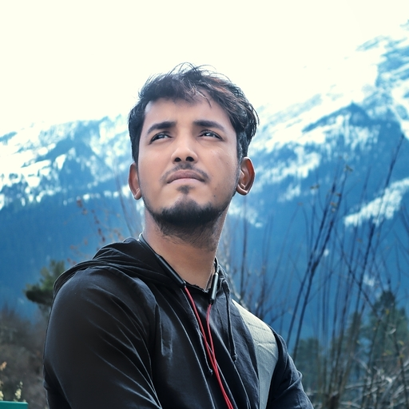

<section id="about" class="about">
  <div class="container">
    <div class="section-title">
      <h2>About</h2>
      <p>
        Hi there! Since we don't know each other well yet, let me
        introduce myself and in turn, you can ping me via any of the media
        I laid out in the contact section. I am a Solutions Engineer, a
        phase by which I mean, being geared towards solving real-world
        problems irrespective of any technology or infrastructure bias.
        <br />
        <br />
        A minimalist and goal-oriented person, who can stand up and take
        responsibilities proactively right from day one. I have worked in
        the domain of web and mobile application development but open to
        all and have got my hands in few other interesting areas too.
        <br />
        <br />
        Also, mentorship and tech blogging is my hobby of pride, I always
        learnt by teaching and keep refining over time to help others
        while strengthening my roots. Have a look at my skill set and feel
        free to have a chat if our paths overlap somewhere. 😊
        <br />
        <br />
      </p>
    </div>

    <div class="row">
      <div class="col-lg-4" data-aos="fade-right">
        
      </div>
      <div class="col-lg-8 pt-4 pt-lg-0 content" data-aos="fade-left">
        <h3>Web Developer &amp; Mentor.</h3>
        <p class="fst-italic">
          Loves to convert your ideas into reality...
        </p>
        <br />
        <p>
          👨‍💻 Currently working as Senior RoR Engineer at Sedin
          Technologies - Rails Factory, India.
        </p>
        <p>❤️ I love Coding, Travelling and Teaching.</p>
        <p>😇 Call me world's happiest engineer.</p>
      </div>
    </div>
  </div>
</section>